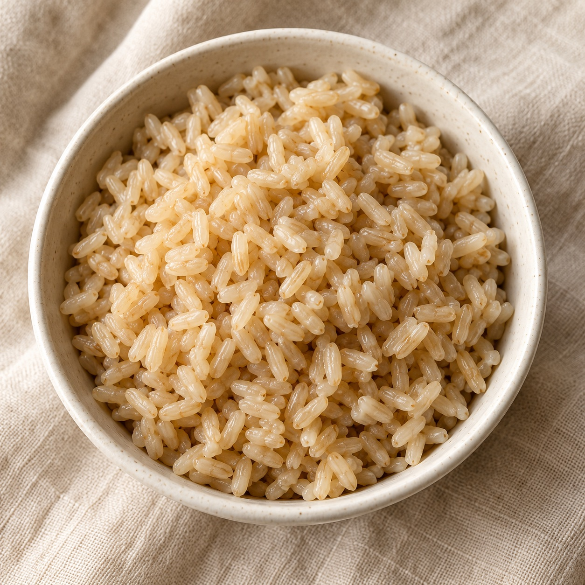
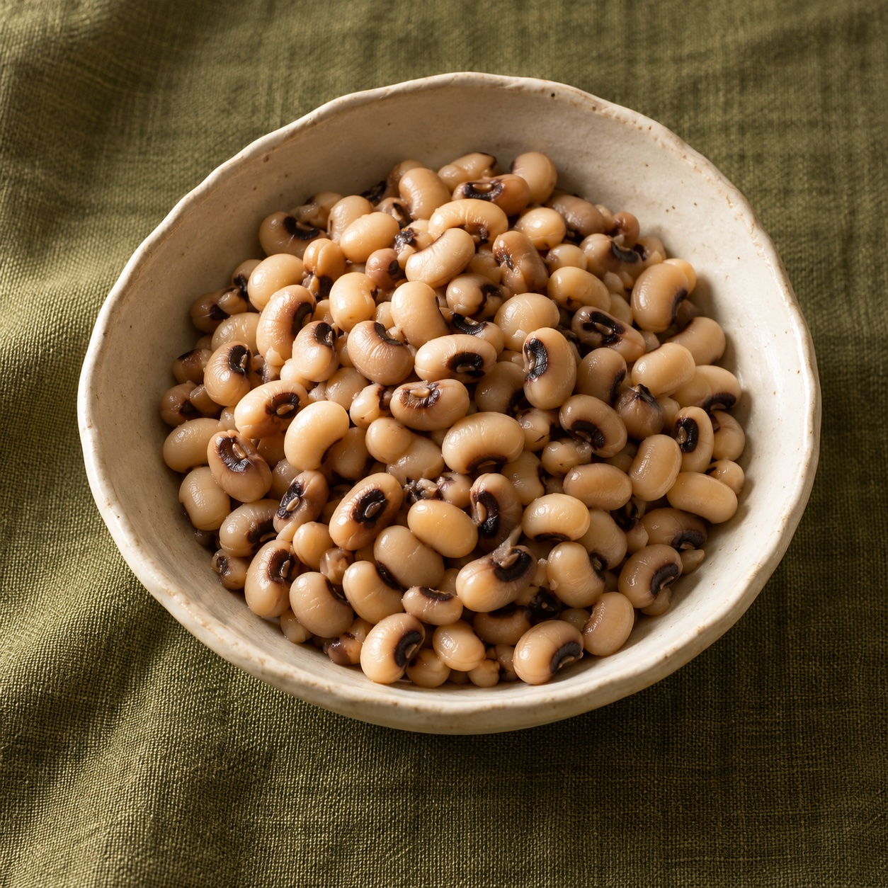
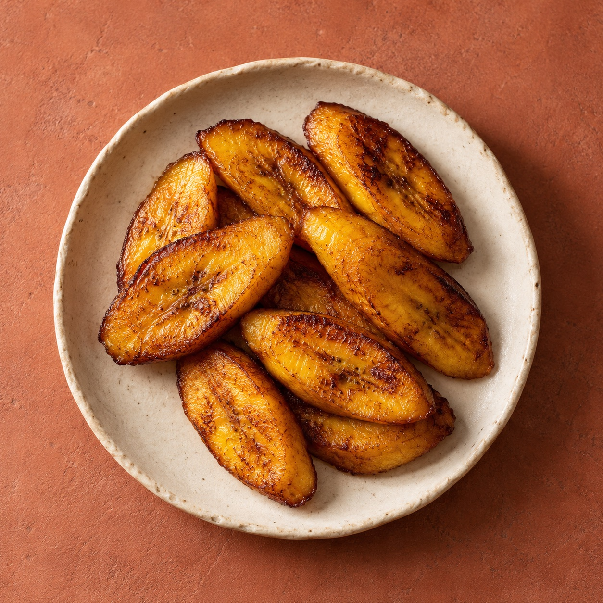
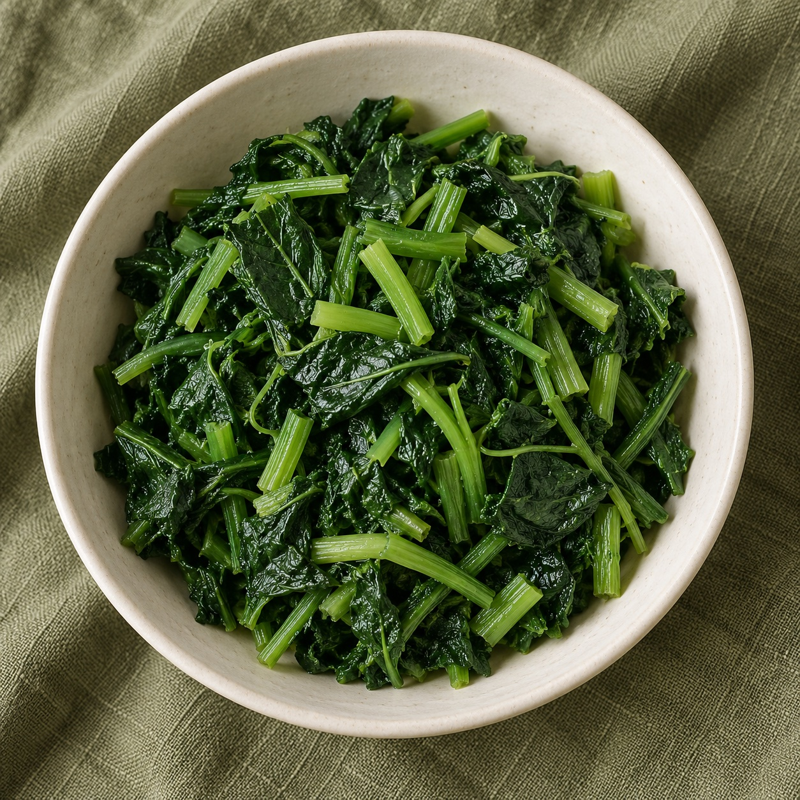
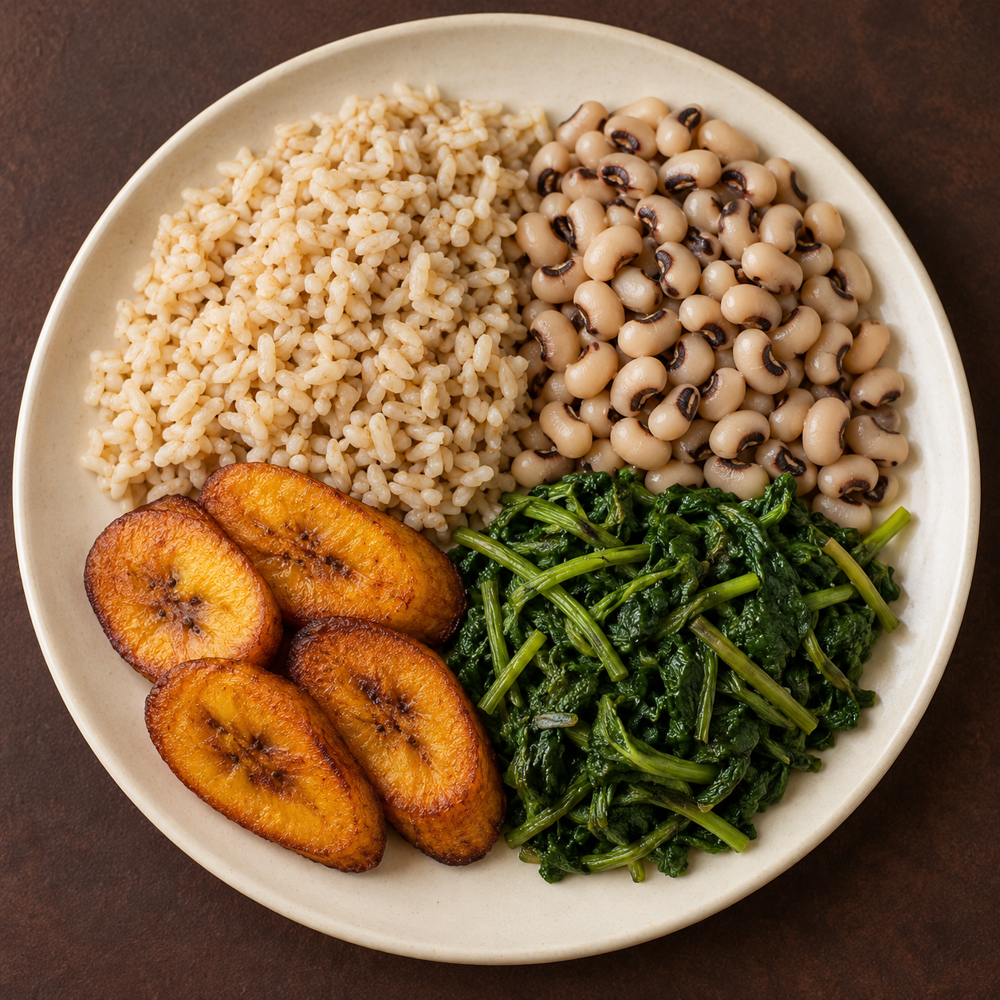

Familiar food. Your way.
Your food.
Your week.
Made yours.
Know what’s in the food you love.
Then make a week that works for you.
No sign-up. No payment. Just a place to start.
More than deciding what’s for dinner.
A little room for the rest of life.

Brown rice150 g · boiled207 kcal
Cowpeas100 g · boiled122 kcal
Plantain60 g · fried225 kcal
Sweet potato leaves75 g · boiled40 kcal207 + 122 + 225 + 40 One plate · 594 kcal

Example serving • estimated nutrition
- Protein
- 18.0 g
- Fibre
- 13.7 g
A little more understanding.
GET TO KNOW YOUR PLATE
Every ingredient
has something to tell you.
Look a little closer at familiar foods. Explore their nutrition, choose your portions, and see how they add up in Plate.
What’s in this example serving? Portions, estimates & sources
This is a representative recipe, not a measurement of the photograph. All weights below are edible, cooked weights. Fried plantain includes oil in its food-table estimate; no extra oil, sauce or seasoning is added to the calculation.
| Food / cooked portion | kcal | Protein (g) | Available carbs (g) | Fat (g) | Fibre (g) |
|---|---|---|---|---|---|
| Brown rice · 150 gBoiled, drained · source 01_035 | 207 | 4.7 | 43.6 | 0.9 | 2.7 |
| Cowpeas · 100 gBoiled, drained · source 03_007 | 122 | 8.5 | 18.3 | 0.5 | 4.7 |
| Plantain · 60 gDeep-fried in vegetable oil · source 02_084 | 225 | 1.3 | 31.0 | 10.1 | 2.2 |
| Sweet potato leaves · 75 gBoiled, drained · source 04_060 | 40 | 3.6 | 3.8 | 0.1 | 4.1 |
| Estimated total | 594 | 18.0 | 96.8 | 11.7 | 13.7 |
Source: FAO/INFOODS Food Composition Table for Western Africa (2019), using the same records as the app. Available carbohydrate excludes fibre. Totals are calculated before rounding; recipes, water content and oil uptake vary. Energy comes from the source table, rather than a recalculation from rounded macros.
Ingredient photographs represent the named foods; the numbers refer to the stated weighed servings. Adjust portions in the app to explore a different plate.
Open my Plate- 01
Keep it familiar.
Start with a plate or a week of African meal ideas. Swap foods and make it your own.
- 02
Make room for real life.
Change meals, adjust portions and reuse a week that worked for your household.
- 03
Bring the shopping together.
One combined ingredient list, scaled for your household. Review it before saving.